本文用于记录牛客寒假赛的六场比赛的赛时解题和赛后补题
笔者水平：CF绿上蓝下
第一场 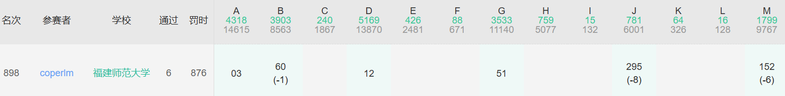
打红温了，头一次连打五个小时~
题本身不难，就是实现上遇到比较多的障碍
A题签到题，如果没有1就输出1e9+7即可
D题也是直接模拟即可
G题排序后计算a[i]-i，就是每个点需要操作的次数了
B题一开始以为是有向图浪费了很多时间，树存在简单路径的充要条件是它是链
M题 也属于思路很简单但是写起来比较困难 的题
就拓扑排序一下，然后逐步拓展，取最优解即可
1 2 3 4 5 6 7 8 9 10 11 12 13 14 15 16 17 18 19 20 21 22 23 24 25 26 27 28 29 30 31 32 33 34 35 36 37 38 39 40 41 42 43 44 45 46 47 48 49 50 51 52 53 54 55 56 57 58 59 60 61 62 63 64 65 66 67 68 69 70 71 #include<iostream> #include<algorithm> #define int long long using namespace std; const int N = 1e5; int n , a[N+10]; struct NUMBER{ int num; int id; }b[N+10]; bool cmp( NUMBER x , NUMBER y ){ return x.num < y.num; } signed main(){ int n;cin >> n; int maxn , minn;maxn = 0 , minn = 2147483647; int minp = 0; int ans = 2147483647; for(int i = 1;i <= n;i ++){ cin >> a[i]; b[i].id = i , b[i].num = a[i]; if( maxn < a[i] ) maxn = a[i]; if( minn > a[i] ) minn = a[i] , minp = i; } if( n == 1 ){ cout << "0\n"; return 0; } int l , r;l = r = minp; sort( b + 1 , b + n + 1 , cmp ); b[n+1].id = n+1 , b[n+1].num = 2147483647; int down_minn = minn * 2; if( maxn < b[1].num * 2 ) maxn = b[1].num * 2; minn = b[2].num , minp = b[2].id; if( minn > down_minn ) minn = down_minn; ans = min( maxn - minn , ans ); for(int p = 2;p <= n;p ++){ if( b[p].id > r ){ while( b[p].id > r ){ r ++; if( maxn < a[r] * 2 ) maxn = a[r] * 2; } minn = b[p+1].num , minp = b[p+1].id; while( minp <= r && minp >= l ){ p ++; minn = b[p+1].num , minp = b[p+1].id; } if( minn > down_minn ) minn = down_minn; ans = min( maxn - minn , ans ); } if( b[p].id < l ){ while( b[p].id < l ){ l --; if( maxn < a[l] * 2 ) maxn = a[l] * 2; } minn = b[p+1].num , minp = b[p+1].id; while( minp <= r && minp >= l ){ p ++; minn = b[p+1].num , minp = b[p+1].id; } if( minn > down_minn ) minn = down_minn; ans = min( maxn - minn , ans ); } } cout << ans << endl; return 0; }
J题 赛时还以为是什么糕级数论，结果降低时间复杂度$O(n^\frac32)$就能过
通过打表可知，符合条件只有两种情况，再判一下就可以了
要先continue掉奇数，不然亲测会T掉
1 2 3 4 5 6 7 8 9 10 11 12 13 14 15 16 17 18 19 20 21 22 23 24 25 26 27 28 29 30 31 32 33 34 35 36 37 #include<iostream> #include<algorithm> #include<map> #include<cmath> #define int long long using namespace std; const int N = 2e5; int n , ans , a[N+10]; map < int , int > m; int gcd_( int x , int y ){ if( y == 0 ) return x; return gcd_( y , x % y ); } signed main(){ cin >> n; for(int i = 1;i <= n;i ++) cin >> a[i]; for(int i = 1;i <= n;i ++) m[a[i]] ++; for(int i = 1;i <= N;i ++){ if( i % 2 ) continue; for(int j = 1;j <= sqrt(i);j ++){ if( i + j <= N ){ if((i ^ (i+j)) == j) if( gcd_( i , i+j ) == j ) ans += m[i]*m[i+j]; if( (i ^ (i+i/j)) == i/j && j*j!=i) if( gcd_( i , i+i/j ) == i/j ) ans += m[i]*m[i+i/j]; } } } cout << ans << endl; return 0; }
赛后补题 C题 看起来不难，以为半个小时就能写完
结果调了好久···
大致思路就是朴素开扫
1 2 3 4 5 6 7 8 9 10 11 12 13 14 15 16 17 18 19 20 21 22 23 24 25 26 27 28 29 30 31 32 33 34 35 36 37 38 39 40 41 42 43 44 45 46 47 48 49 50 51 52 53 54 55 56 57 58 59 60 61 62 63 64 65 66 67 68 69 70 71 72 73 74 75 76 77 78 79 80 81 82 83 84 85 86 #include<iostream> #define int long long using namespace std; const int N = 1e2; int n , t , a[N+10][N+10]; int ans_list[1000000][5]; string s; signed main(){int t;cin >> t; while( t -- ){ cin >> n; for(int i = 1;i <= n;i ++){ cin >> s; for(int j = 0;j < n;j ++){ if( s[j] == '1' ) a[i][j+1] = 1; else a[i][j+1] = 0; } } int cnt = 0; for(int i = 1;i <= n/2;i ++){ for(int j = 1;j <= n/2;j ++){ if( a[i][j] == 0 ){ for(int ii = 1;ii <= n;ii ++){ int jj , jjl;if( ii < i ) jjl = n/2+1; else if( ii == i ) jjl = j; else jjl = 1; for(jj = n;jj >= jjl;jj --){ if( a[ii][jj] == 1 ){ // cout << "SWAPP: " << ii << " " << jj << endl; while( !(i==ii&&j==jj) ){ if( ii > i && a[ii-1][jj] == 0 ){ cnt ++; swap( a[ii][jj] , a[ii-1][jj] ); ans_list[cnt][1] = ii; ans_list[cnt][2] = jj; ans_list[cnt][3] = ii-1; ans_list[cnt][4] = jj; ii --; }else if( ii < i && a[ii+1][jj] == 0 ){ cnt ++; swap( a[ii][jj] , a[ii+1][jj] ); ans_list[cnt][1] = ii; ans_list[cnt][2] = jj; ans_list[cnt][3] = ii+1; ans_list[cnt][4] = jj; ii ++; }else if( jj > j && a[ii][jj-1] == 0 ){ cnt ++; swap( a[ii][jj] , a[ii][jj-1] ); ans_list[cnt][1] = ii; ans_list[cnt][2] = jj; ans_list[cnt][3] = ii; ans_list[cnt][4] = jj-1; jj --; }else if( jj < j && a[ii][jj+1] == 0 ){ cnt ++; swap( a[ii][jj] , a[ii][jj+1] ); ans_list[cnt][1] = ii; ans_list[cnt][2] = jj; ans_list[cnt][3] = ii; ans_list[cnt][4] = jj+1; jj ++; }else goto RECHOOSE; }goto FIXED; }RECHOOSE:; } } }FIXED:; } } // for(int i = 1;i <= n;i ++){ // for(int j = 1;j <= n;j ++){ // cout << a[i][j] << " "; // }cout << endl; // } cout << cnt << endl; for(int i = 1;i <= cnt;i ++){ for(int j = 1;j <= 4;j ++){ cout << ans_list[i][j] << " "; }cout << endl; } } return 0; }
结果WA了个测试点~
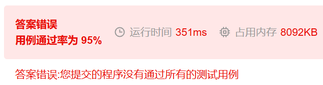
看了题解，感觉思路真妙哇~
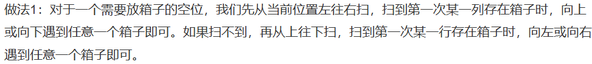
按照题解敲了一下，发现实现起来的复杂程度和我的代码差不多···
最终千辛万苦，debug一整个下午，找到问题了
ii和jj这个两个指针复用导致的，每次用完之后复位一下就好了
1 2 3 4 5 6 7 8 9 10 11 12 13 14 15 16 17 18 19 20 21 22 23 24 25 26 27 28 29 30 31 32 33 34 35 36 37 38 39 40 41 42 43 44 45 46 47 48 49 50 51 52 53 54 55 56 57 58 59 60 61 62 63 64 65 66 67 68 69 70 71 72 73 74 75 76 77 78 79 80 81 82 83 84 85 86 87 88 89 90 91 92 93 94 95 96 97 98 99 100 #include<iostream> #define int long long using namespace std; const int N = 1e2; int n , t , a[N+10][N+10]; int ans_list[1000000][5]; string s; signed main(){int t;cin >> t; while( t -- ){ cin >> n; for(int i = 1;i <= n;i ++){ cin >> s; for(int j = 0;j < n;j ++){ if( s[j] == '1' ) a[i][j+1] = 1; else a[i][j+1] = 0; } } int cnt = 0; for(int i = 1;i <= n/2;i ++){ for(int j = 1;j <= n/2;j ++){ if( a[i][j] == 0 ){ for(int ii = 1;ii <= n;ii ++){ int jj;if( ii < i ) jj = n/2+1; else if( ii == i ){ jj = j+1;}//cout << "???????????" << endl;} else jj = 1; int oii , ojj;oii = ii; // cout << "disp?: "<< i << " " << j << " " << ii << " " << jj << endl; while(jj <= n){ ojj = jj; // cout << "ij: "<< i << " " << j << " " << ii << " " << jj << endl; if( a[ii][jj] == 1 ){ // cout << "SWAPP: " << ii << " " << jj << endl; while( !(i==ii&&j==jj) ){ // cout << "PASSED: " << ii << " " << jj << endl; if( ii > i && a[ii-1][jj] == 0 ){ cnt ++; swap( a[ii][jj] , a[ii-1][jj] ); ans_list[cnt][1] = ii; ans_list[cnt][2] = jj; ans_list[cnt][3] = ii-1; ans_list[cnt][4] = jj; ii --; }else if( ii < i && a[ii+1][jj] == 0 ){ cnt ++; swap( a[ii][jj] , a[ii+1][jj] ); ans_list[cnt][1] = ii; ans_list[cnt][2] = jj; ans_list[cnt][3] = ii+1; ans_list[cnt][4] = jj; ii ++; }else if( jj > j && a[ii][jj-1] == 0 ){ cnt ++; swap( a[ii][jj] , a[ii][jj-1] ); ans_list[cnt][1] = ii; ans_list[cnt][2] = jj; ans_list[cnt][3] = ii; ans_list[cnt][4] = jj-1; jj --; }else if( jj < j && a[ii][jj+1] == 0 ){ cnt ++; swap( a[ii][jj] , a[ii][jj+1] ); ans_list[cnt][1] = ii; ans_list[cnt][2] = jj; ans_list[cnt][3] = ii; ans_list[cnt][4] = jj+1; jj ++; }else goto RECHOOSE; }goto FIXED; }RECHOOSE:; ii = oii , jj = ojj; jj ++; } } // cout << "unp: " << i << " " << j << endl; // for(int i = 1;i <= n;i ++){ // for(int j = 1;j <= n;j ++){ // cout << (a[i][j]==1?"1":"0") << " "; // }cout << endl; // } }FIXED:; } } // for(int i = 1;i <= n;i ++){ // for(int j = 1;j <= n;j ++){ // cout << (a[i][j]==1?"1":"0") << " "; // }cout << endl; // } cout << cnt << endl; for(int i = 1;i <= cnt;i ++){ for(int j = 1;j <= 4;j ++){ cout << ans_list[i][j] << " "; }cout << endl; } } return 0; }
E题 概率论没学好（悲
知道了这一点，将会是签到题的难度（悲
1 2 3 4 5 6 7 8 9 10 11 12 13 14 15 16 17 18 19 20 21 22 23 24 25 26 27 28 29 30 31 32 33 34 35 36 37 38 39 40 41 42 43 44 #include<iostream> #include<algorithm> #define int long long using namespace std; const int N = 1e5; int n , t , a[N+10]; signed main(){int t; cin >> t; while( t -- ){ cin >> n; int ans = 0; for(int i = 1;i <= n;i ++){ cin >> a[i]; } sort( a + 1 , a + n + 1 ); int goal , goal1; goal1 = a[(n/2+1)/2]; goal = a[n/2+(n/2+1)/2]; for(int i = 1;i <= n/2;i ++){ ans += abs( a[i] - goal1 ); } for(int i = n/2+1;i <= n;i ++){ ans += abs( a[i] - goal ); } if( goal1 == goal ){ int add , add_temp;add_temp = 0; for(int i = 1;i <= n/2;i ++){ if( a[i] == goal1 ) add_temp ++; else add_temp --; }add = add_temp; add_temp = 0; for(int i = n/2+1;i <= n;i ++){ if( a[i] == goal ) add_temp ++; else add_temp --; }add = min(add_temp,add); ans += add; } cout << ans << endl; } return 0; }
H题 思维题
考虑贪心，为了最大化排的开，我们需要按左节点排序，当$i=l_i$时加入备选，备选里面按右节点排序
如果不够了，就说明不存在
记得判非空
顺便学习了一下如何结构体根堆
1 2 3 4 5 6 7 8 9 10 11 12 13 14 15 16 17 18 19 20 21 22 23 24 25 26 27 28 29 30 31 32 33 34 35 36 37 38 39 40 41 42 43 44 45 46 47 48 49 50 #include<iostream> #include<algorithm> #include<queue> #define int long long using namespace std; const int N = 1e5; int n; struct NODE{ int l , r; int id; }a[N+10]; bool cmp( NODE x , NODE y ){ return x.l < y.l; } struct Comp{ bool operator()(const NODE& x , const NODE& y){ // if( x.r == y.r ) return x.r > y.r; } }; priority_queue < NODE , vector < NODE > , Comp > pq; int ans[N+10]; signed main(){ cin >> n; for(int i = 1;i <= n;i ++){ cin >> a[i].l >> a[i].r;a[i].id = i; }sort( a + 1 , a + n + 1 , cmp ); int top = 1 , topi = 1; while( top <= n ){ while( a[topi].l == top ) pq.push( {a[topi].l,a[topi].r,a[topi].id} ) , topi ++; if( pq.empty() ){ cout << -1 << endl; return 0; } if( pq.top().r >= top ){ ans[pq.top().id] = top; pq.pop();top ++; }else{ cout << -1 << endl; return 0; } }for(int i = 1;i <= n;i ++){ cout << ans[i] << " "; }cout << endl; return 0; }
就此，100人以上的题目都补完了
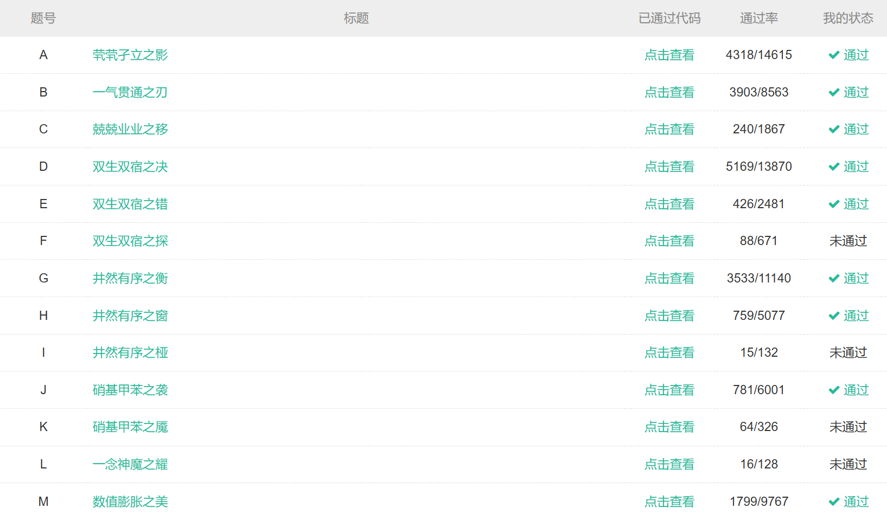
第二场 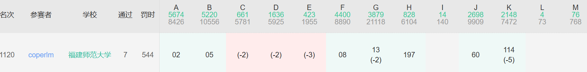
这场被打爆了，D结论题没做出来（根本想不到）
不过好在H题一个钝角三角形就秒了，没掉太大分
A题签到
B题直接排序然后输出a[n/2+1]-1即可
F题打表找到规律r-l+1
G题直接模拟
J题也是大模拟（但是没有想象中的毒瘤）
K题 直接搜索即可，但是需要一些优化技巧不然会T掉~
就涂色就可以了，代码还是听清楚的
感觉难在优化（挂五发的悲哀）
1 2 3 4 5 6 7 8 9 10 11 12 13 14 15 16 17 18 19 20 21 22 23 24 25 26 27 28 29 30 31 32 33 34 35 36 37 38 39 40 41 42 43 44 45 46 47 48 49 50 51 52 53 54 55 56 57 58 59 60 61 62 63 64 65 66 67 68 #include<iostream> #include<algorithm> #include<string> #include<map> #define int long long using namespace std; const int N = 5e2; int n , m; int a[N+10][N+10]; int blue[N+10][N+10]; int rem[N+10][N+10]; string s; int ans , ans_now; int most_low; void dfs( int i , int j ){ most_low = max( most_low , i + 1 ); if( i+1<=n && a[i+1][j] == 1 && blue[i+1][j] == 0 ) blue[i+1][j] = 1 , dfs(i+1,j); else if( i+1<=n && blue[i+1][j] == 0 ) blue[i+1][j] = 2 , ans_now ++; if( i-1>=1 && a[i-1][j] == 1 && blue[i-1][j] == 0 ) blue[i-1][j] = 1 , dfs(i-1,j); else if( i-1>=1 && blue[i-1][j] == 0 ) blue[i-1][j] = 2 , ans_now ++; if( j+1<=m && a[i][j+1] == 1 && blue[i][j+1] == 0 ) blue[i][j+1] = 1 , dfs(i,j+1); else if( j+1<=m && blue[i][j+1] == 0 ) blue[i][j+1] = 2 , ans_now ++; if( j-1>=1 && a[i][j-1] == 1 && blue[i][j-1] == 0 ) blue[i][j-1] = 1 , dfs(i,j-1); else if( j-1>=1 && blue[i][j-1] == 0 ) blue[i][j-1] = 2 , ans_now ++; return ; } signed main(){ // freopen("in.txt", "r", stdin); cin >> n >> m; for(int i = 1;i <= n;i ++){ cin >> s; for(int j = 0;j < m;j ++){ a[i][j+1] = s[j] - '0'; } } ans = 2147483647; int ii , jj;ii = 1; while( 1 ){ ans_now = 0; most_low = 1; for(;ii <= n;ii ++){ for(jj = 1;jj <= m;jj ++){ if( a[ii][jj] ){ blue[ii][jj] = 1; dfs( ii , jj ); goto OUT; } } } break; OUT:; ans = min( ans , ans_now ); for(int i = ii;i <= most_low;i ++){ for(int j = 1;j <= m;j ++){ if( blue[i][j] ){//1和2都涂为灰色 blue[i][j] = 0; a[i][j] = 0; } } } }cout << ans << endl; return 0; }
H题 没想到这题这么简单，答案是钝角（即答
直接试图构造最钝角的钝角三角形即可
1 2 3 4 5 6 7 8 9 10 11 12 13 14 15 16 17 18 19 20 21 22 23 #include<iostream> #include<algorithm> using namespace std; int a , b , c , d; signed main(){ int t;cin >> t;while( t -- ){ cin >> a >> b >> c >> d; if( b - a > d - c ){ cout << b << " " << d << endl; cout << b-1 << " " << d << endl; cout << a << " " << d-1 << endl; }else{ cout << a << " " << c << endl; cout << a << " " << c+1 << endl; cout << a+1 << " " << d << endl; } } return 0; }
赛后补题 D题 大结论题，完全没想到的一款
结论：连续子串和不连续子串，最长情况下，只有最后一个（或者第一个）字母不同
学长给的证明，感觉很清晰易懂
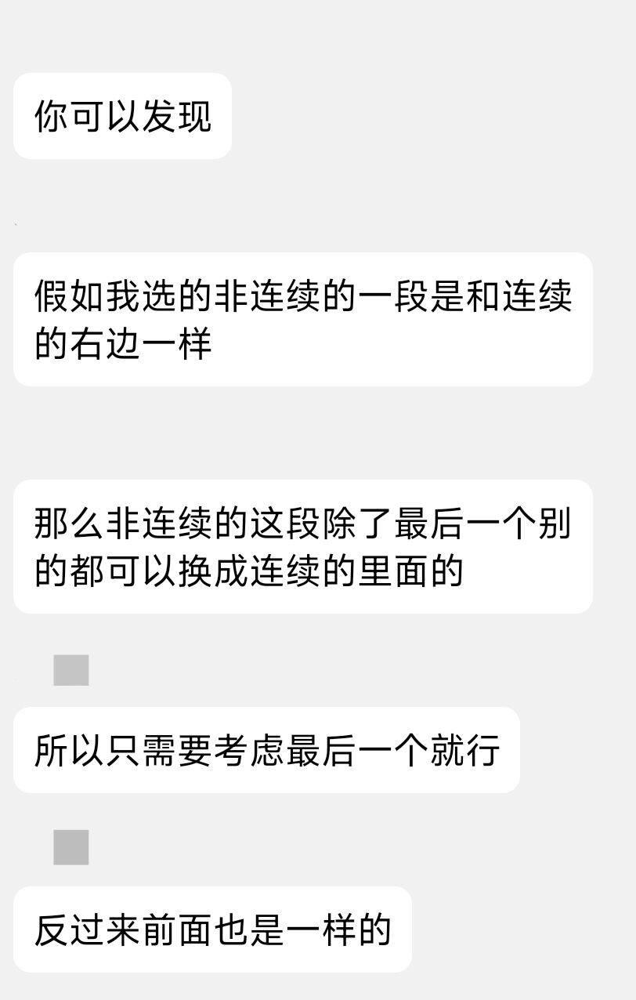
赛后多了新数据，特判一下1的时候输出0就可以了
1 2 3 4 5 6 7 8 9 10 11 12 13 14 15 16 17 18 19 20 21 22 23 24 25 26 27 28 29 30 31 32 #include<iostream> #include<map> #define int long long using namespace std; const int N = 2e5; int n; string s; int a[N+10] , lst[30]; map < int , int > mp; signed main(){ cin >> n >> s; for(int i = 1;i <= n;i ++){ a[i] = s[i-1] - 'a' + 1; } int maxn = 0; for(int i = 1;i <= n;i ++){ if( mp[a[i]] ) maxn = max( maxn , lst[a[i]] ); mp[a[i]] ++ , lst[a[i]] = i; } for(int i = 1;i <= 26;i ++) mp[i] = 0; for(int i = n;i >= 1;i --){ if( mp[a[i]] ) maxn = max( maxn , n - lst[a[i]] + 1 ); mp[a[i]] ++ , lst[a[i]] = i; } if( maxn == 1 ) maxn = 0; cout << maxn << endl; return 0; }
C题 构造题，需要建立在D的结论之上
不妨先只考虑一个方向（从前往后）
构造一个串，答案为最后一个倒数第二个字母 （最大的）
就，前面半截是abcde...，只要末尾最后俩是对a，就是m=n-1
例如，n=11,m=10，则构造的序列为abcdefghiaa，这时符合条件（只考虑从前往后扫）
那，还要从后往前扫怎么办~
对称一下不就好了，即abcdefghiaihgfedcba，这时m=10（虽然n变了）
n=2m+1的时候可以这样子构造，，，那其他情况呢？n>2*m的时候，往中间填充任意字符就可以了（需要是两侧出现过的哦）
如果n<=2*m，也就是回文区间大于前缀/后缀 ，可以发现我们可以从前缀结束之后直接继续数，例如
abcde fgh edcba这样子，反正这样就可以达到延长子串的作用（不信你试试，答案刚好是前两段的内容（第一种情况下答案只包含第一段+1））
最后别忘了特判n==m和字母不够（n-m>26）的情况
1 2 3 4 5 6 7 8 9 10 11 12 13 14 15 16 17 18 19 20 21 22 23 24 25 26 27 28 29 30 31 32 33 34 35 36 37 38 39 40 41 42 #include<iostream> #include<algorithm> using namespace std; const int N = 2e5; int n , m; signed main(){ int t;cin >> t;while( t -- ){ cin >> n >> m; if( n == m || n - m > 26 ){ cout << "NO" << endl; continue; } cout << "YES" << endl; if( n > m * 2 ){ for(int i = 1;i <= m;i ++){ cout << (char)(i+'a'-1); } for(int i = m+1;i <= n-m;i ++){ cout << (char)(i+'a'-1); } for(int i = m;i >= 1;i --){ cout << (char)(i+'a'-1); } cout << endl; }else{ for(int i = 1;i <= n-m;i ++){ cout << (char)(i+'a'-1); } for(int i = 1;i <= 2*m-n;i ++){ cout << (char)(1+'a'-1); } for(int i = n-m;i >= 1;i --){ cout << (char)(i+'a'-1); } cout << endl; } } return 0; }
E题 哦原来是RMQ算法哇怪不得我不会做原来是因为我不会
先记下来，明儿个学了再补~
第三场 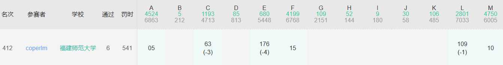
这场发挥比较好，骑马进前10%了（也有可能是题目难度梯度大，恰巧E调出来了）
A题猜结论按奇偶性分类，随机数最优策略都只拿一个故偶数必败
M题一个桶结束
F题模拟一下极端情况，可以发现sum{a,b,c}在n和2n之间是合法的，否则不合法
C题 正解为按字典序排序然后贪心，当然trie树也可以做
由于最后一步不需要复原，故把最后一个弄成最长的那个即可
1 2 3 4 5 6 7 8 9 10 11 12 13 14 15 16 17 18 19 20 21 22 23 24 25 26 27 28 29 30 31 32 33 34 35 36 37 38 39 40 #include<iostream> #include<algorithm> #define int long long using namespace std; const int N = 1e5; int n , m; string s[N+10]; bool cmp( string x , string y ){ for(int i = 0;i < min(x.length(),y.length());i ++) if( x[i] != y[i] ) return (int)(x[i]) < (int)(y[i]); return x.length() < y.length(); } signed main(){ cin >> n >> m; for(int i = 1;i <= n;i ++){ cin >> s[i]; }cin >> m >> m; sort( s + 1 , s + n + 1 , cmp ); string now_str = ""; int ans = 0; for(int i = 1;i <= n;i ++){ while( now_str != s[i] ){ int j = 0; for(;j < min(now_str.length(),s[i].length());j ++) if( now_str[j] != s[i][j] ) break; ans += ( s[i].length() + now_str.length() - j*2 ); now_str = s[i]; } } int long_max = 0; for(int i = 1;i <= n;i ++){ long_max = max( long_max , (int)s[i].length() ); } cout << ans + (int)now_str.length() - long_max << endl; return 0; }
L题 算是个构造+小模拟
我的策略如下
初始下，不妨设酱紫
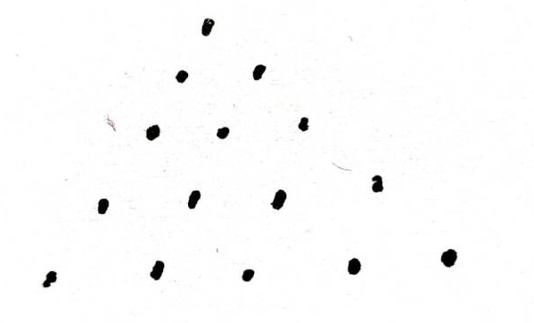
构造，先把右上角这条线，从上到右下画了
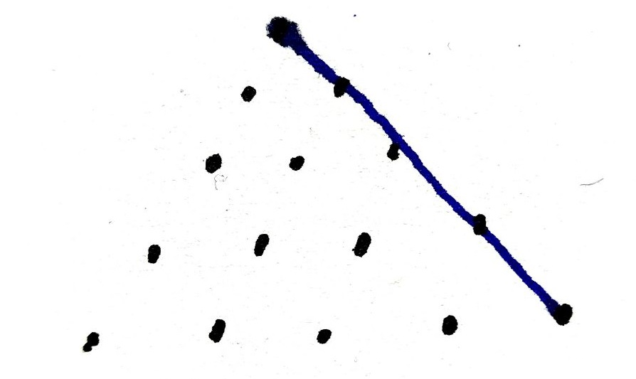
然后通过以下规则进行填充
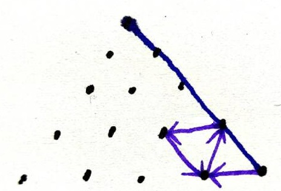
按照紫色的规则，填充到最左侧，然后往上两个（见红色）
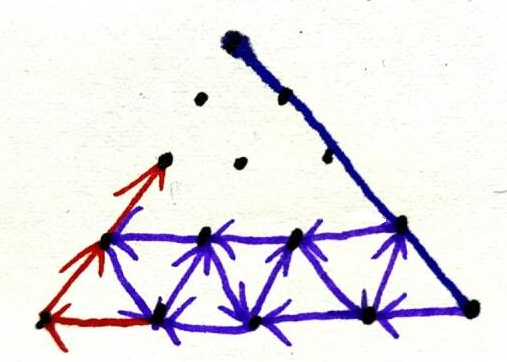
再按如图的规则填充到最右侧
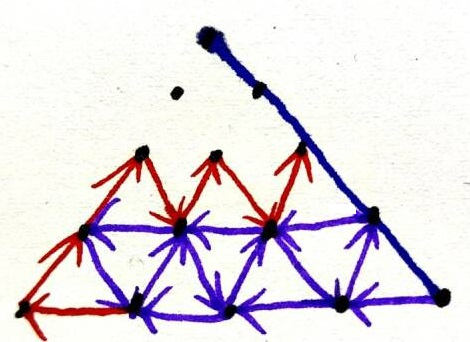
现在就回到了最右侧，之后按照之前的步骤，就可以填充所有的节点
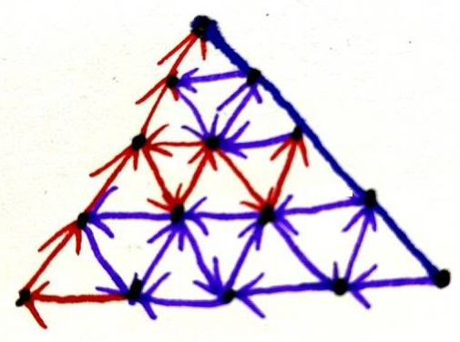
通过代码实现上述内容即可，数据范围比较小，调试通过了大概率就能过
1 2 3 4 5 6 7 8 9 10 11 12 13 14 15 16 17 18 19 20 21 22 23 24 25 26 27 28 29 30 31 32 33 34 35 36 37 38 39 40 41 42 43 44 45 46 47 48 49 50 51 52 53 #include<iostream> #define int long long using namespace std; int a[10][10]; void out( int i , int j ){ cout << a[i][j] << " "; // cout << i << " " << j << endl; return ; } signed main(){ int n;cin >> n;n ++;cout << "Yes" << endl; int cnt = 0; for(int i = 1;i <= n;i ++){ for(int j = 1;j <= n;j ++){ if( i >= j ){ cnt ++;a[i][j] = cnt; } } } // for(int i = 1;i <= n;i ++){ // for(int j = 1;j <= n;j ++){ // cout << a[i][j] << " "; // }cout << endl; // } for(int i = 1;i <= n;i ++){ out(i,i); } for(int i = n;i >= 1;i --){ for(int j = i-1;j >= 1;j --){ // cout << "start: " << i << " " << j << endl; if( j == 1 ){ out(i,j); i--;out(i,j); if( i > 1 ) {i--;out(i,j);} while( j < i ){ i++,j++;out(i,j); i--;out(i,j); } }else{ out(i,j); i--;out(i,j); j--;out(i,j); j++,i++;out(i,j); } // cout << "round: " << i << " " << j << endl; } }cout << endl; return 0; }
E题 因为是弹性碰撞，所以我们可以认为两个球碰撞等价于两个球相互穿过 （后面的讨论都基于此）
只考虑向右和向左的球，故如果知道了时间 $t$，我们只需要确定是否存在大于 $k$ 个球的间距不小于 $2t$ 且左侧的球是向右走，右侧的球向左走
故我们将两侧的球分别记录，然后二分时间即可
值得注意的是，向右走的球与其左侧的向左走的球永远不可能相撞，故记录一下进行减法运算即可
从后往前扫，累计加入答案，这样可以让一次check的时间复杂度降到$O(n)$
1 2 3 4 5 6 7 8 9 10 11 12 13 14 15 16 17 18 19 20 21 22 23 24 25 26 27 28 29 30 31 32 33 34 35 36 37 38 39 40 41 42 43 44 45 46 47 48 49 50 51 52 53 54 55 56 57 58 59 60 61 62 63 64 65 66 67 68 69 #include<iostream> #include<cstdio> #include<algorithm> #define int long long using namespace std; const int N = 1e5; int n , k; struct BOLL { int p , v; }b[N+10]; int distl[N+10] , distr[N+10] , uselessp[N+10]; int ltop , rtop; bool cmp( BOLL x , BOLL y ){ return x.p < y.p; } int check( long double dist ){ // cout << "dist: " << dist << endl; int ans = 0 , i , j;i = j = 1; while( i <= ltop && j <= rtop + 1 ){ if( distr[j] - distl[i] <= dist && j != rtop+1 ){ j ++; }else{ ans += ( j-1 - uselessp[i] ); // cout << "ans: " << ans << endl; i ++; } } // cout << "dist k: " << ans << endl; return ans; } long double ef( long double l , long double r ){ if( r - l <= 1e-8 ) return l; long double mid = (l+r)/2; if( check( mid ) >= k ) return ef(l,mid); else return ef(mid,r); } signed main(){ cin >> n >> k; for(int i = 1;i <= n;i ++){ cin >> b[i].p >> b[i].v; }sort( b + 1 , b + n + 1 , cmp ); int useless = 0; for(int i = 1;i <= n;i ++){ if( b[i].v == 1 ) distl[++ltop] = b[i].p , uselessp[ltop] = useless; else distr[++rtop] = b[i].p , useless ++; } // for(int i = 1;i <= ltop;i ++) cout << distl[i] << " ";cout << endl; // for(int i = 1;i <= ltop;i ++) cout << uselessp[i] << " ";cout << endl; // for(int i = 1;i <= rtop;i ++) cout << distr[i] << " ";cout << endl; int reference = 0; for(int i = 1;i <= ltop;i ++) reference += (rtop-uselessp[i]); // cout << reference << endl; if( k > reference ){ cout << "No" << endl; }else{ long double ans = ef( 0 , 1e9 ); printf("Yes\n%0.8Lf\n",ans/2); } // cout << ans << endl; return 0; }
赛后补题 G题 打个表先~
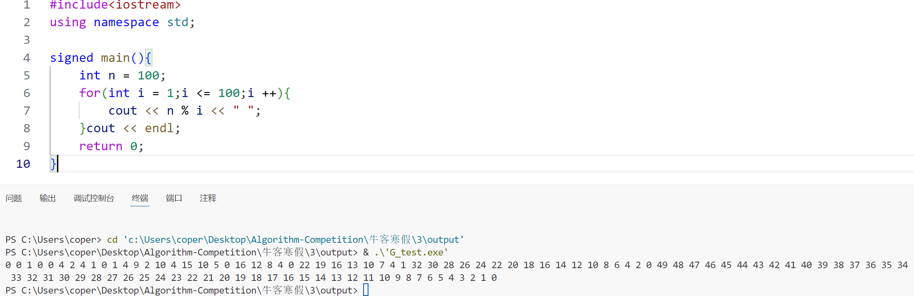
从后往前看，发现是等差数列
先是公差为1，然后公差为2，之后3…
故可以分块，公差相同的一组分到一个块
然后二分符合条件的数值（第前k项对应的数值）；对于每个块，知道了首项和公差，所以可以$O(1)$计算有多少个符合条件的；总共有$\sqrt{n}$个块。故此算法的时间复杂度为$O(\sqrt{n}\log n)$
值得注意的是，二分的写法有点不太传统~
1 2 3 4 5 6 7 8 9 10 11 12 13 14 15 16 17 18 19 20 21 22 23 24 25 26 27 28 29 30 31 32 33 34 35 36 37 38 39 40 41 42 43 44 45 46 47 48 49 50 51 52 53 54 55 56 57 58 59 #include<iostream> #define int long long using namespace std; int n , k; int vtot , val; int cnt( int num ){ int tot = 0; for(int l = 1,r;l <= n;l = r + 1){ r = n / ( n / l ); int a = n - n / l * l; int b = n / l; if( a < num ) continue; tot += min( (a-num)/b+1 , r - l + 1 ); }return tot; } void ef( int l , int r ){ if( l > r ) return ; int mid = (l+r)/2; int tot = cnt(mid); if( tot < k ){ vtot = tot , val = mid; ef( l , mid - 1 ); } else ef( mid + 1 , r ); } // void ef( int l , int r ){ // if( l <= r ) return ; // int mid = (l+r)/2; // int tot = cnt(mid); // if( tot < k ){ // vtot = tot , val = mid; // ef( l , mid ); // } // else ef( mid + 1 , r ); // } signed main(){ cin >> n >> k; ef( 1ll , n ); // cout << val << " " << vtot << endl; int ans = ( k - vtot ) * ( val - 1 ); // cout << ans << endl; for(int l = 1,r;l <= n;l = r + 1){ r = n / ( n / l ); int a = n - n / l * l; int b = n / l; if( a < val ) continue; int len = min((a - val) / b + 1, r - l + 1); ans += (a * 2 - b * (len - 1)) * len / 2; // cout << ans << endl; } cout << ans << endl; return 0; }
第四场 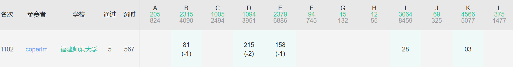
这场代码量太大了（悲
K题签到题，直接取最大值即可
I题直接扫一遍即可
B题直接枚举即可，C就不会了（悲
E题直接开扫，我写的依托~
D题 1 2 3 4 5 6 7 8 9 10 11 12 13 14 15 16 17 18 19 20 21 22 23 24 25 26 27 28 29 30 31 32 33 34 35 36 37 38 39 40 41 #include<iostream> #include<map> #define int long long using namespace std; int t , n , m; string a , b; map < char , int > mp; signed main(){ cin >> t;while( t -- ){ cin >> n >> m; cin >> a >> b; mp.clear(); if( n < m ){ string c = a; a = b , b = c; swap( n , m ); } for(int i = 0;i < a.length();i ++){ mp[a[i]] ++; } for(int i = 0;i < b.length();i ++){ mp[b[i]] --; } int ans = 0; for(int i = 0;i <= 26;i ++){ if( mp[i+'a'] < 0) ans -= mp[i+'a'] , mp[i+'a'] = 0; } int temp_del = 0 , rel = 0; for(int i = 0;i <= 26;i ++){ if( mp[i+'a'] >= 2 ) temp_del += mp[i+'a'] / 2; rel += mp[i+'a']; } ans += rel-min( temp_del * 2 , n - m ); cout << ans/2 << endl; } return 0; }
赛后补题 
.gif)
.gif)
.gif)
.gif)
.gif)
.gif)
.gif)
.gif)
.gif)
.gif)
.gif)